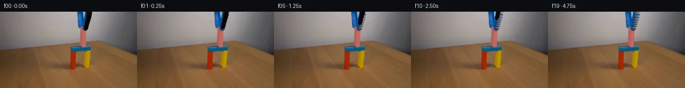

![首帧]()

Round 00
2026-11-06T11:23:48.664635+00:00像素候选变化代码 +206/−0inspection 更新
pixels e529fd100f9cd9d9 · code 03c9fbd592335d34
查看本轮 generate.py 真实 diff
--- previous/generate.py +++ current/generate.py @@ -0,0 +1,206 @@ +#!/usr/bin/env python3 +"""generate.py – Generate 20 frames (256×144, 4fps, 5s) showing grabber retraction. + +Method: Identify the blue-black grabber tool in the top-center of first_frame.png, +create an inpainted background for the occluded region, animate the grabber +retracting upward over frames 1-14, and keep frames 15-19 static. +""" + +import numpy as np +from PIL import Image +from pathlib import Path +import sys + +# Add workspace to path for artifact_io +sys.path.insert(0, str(Path(__file__).parent)) +from artifact_io import save + +CASE_DIR = Path(__file__).parent +FRAME_W, FRAME_H = 256, 144 +N_FRAMES = 20 + +def main(): + # ── Load first frame ── + img = Image.open(CASE_DIR / "first_frame.png") + frame0 = np.array(img, dtype=np.uint8).copy() # (144, 256, 3) + + # ── Build grabber mask ── + # Grabber region of interest (ROI): top-center + gx0, gx1 = 154, 173 # x bounds (inclusive, exclusive) + gy0, gy1 = 0, 40 # y bounds + + roi = frame0[gy0:gy1, gx0:gx1].astype(np.float32) # (40, 19, 3) + max_ch = roi.max(axis=2) # (40, 19) + + # Binary mask: grabber body where max channel < 45 + mask_binary = (max_ch < 45).astype(np.float32) + + # Soft alpha: transition zone where 45 <= max_ch < 70 + soft_zone = (max_ch >= 45) & (max_ch < 70) + alpha_soft = np.clip(1.0 - (max_ch - 45) / 25.0, 0, 1) + mask_binary[soft_zone] = alpha_soft[soft_zone] + + # Also include very dark pixels just outside the strict ROI that belong to grabber + # Extend slightly: columns 153-174 + gx0_ext, gx1_ext = 153, 174 + roi_ext = frame0[gy0:gy1, gx0_ext:gx1_ext].astype(np.float32) + max_ch_ext = roi_ext.max(axis=2) + mask_ext = np.clip(1.0 - max_ch_ext / 45.0, 0, 1) # softer falloff for wider region + + # Combine: use the strict mask for the core, extended for edges + mask_full = np.zeros((FRAME_H, FRAME_W), dtype=np.float32) + mask_full[gy0:gy1, gx0:gx1] = mask_binary + + # ── Create inpainted background ── + # Only inpaint actual grabber pixels (mask > 0). Non-grabber pixels in the + # region (e.g., blue block edges at x=154-156) stay as frame0. + # For each row, interpolate between the nearest non-grabber pixels + # to the left and right of each grabber pixel. + bg_inpainted = frame0.copy().astype(np.float32) + + for y in range(gy0, gy1): + for x in range(gx0, gx1): + if mask_full[y, x] > 0: + # Find nearest non-grabber pixel to the left + left_x = x - 1 + while left_x >= gx0 and mask_full[y, left_x] > 0.5: + left_x -= 1 + left_color = frame0[y, max(left_x, 0)].astype(np.float32) + + # Find nearest non-grabber pixel to the right + right_x = x + 1 + while right_x < gx1 and mask_full[y, right_x] > 0.5: + right_x += 1 + right_color = frame0[y, min(right_x, FRAME_W - 1)].astype(np.float32) + + # Linear interpolation + total_dist = right_x - left_x + if total_dist > 0: + t = (x - left_x) / total_dist + interp_color = (1 - t) * left_color + t * right_color + else: + interp_color = left_color + + bg_inpainted[y, x] = interp_color + + bg_inpainted = np.clip(bg_inpainted, 0, 255).astype(np.uint8) + … diff truncated; 119 more lines …